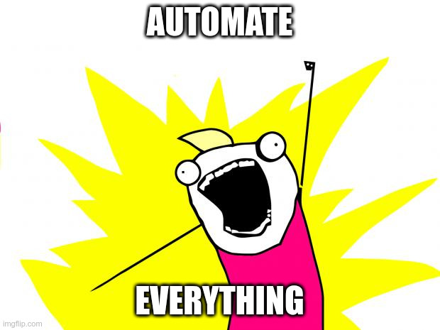
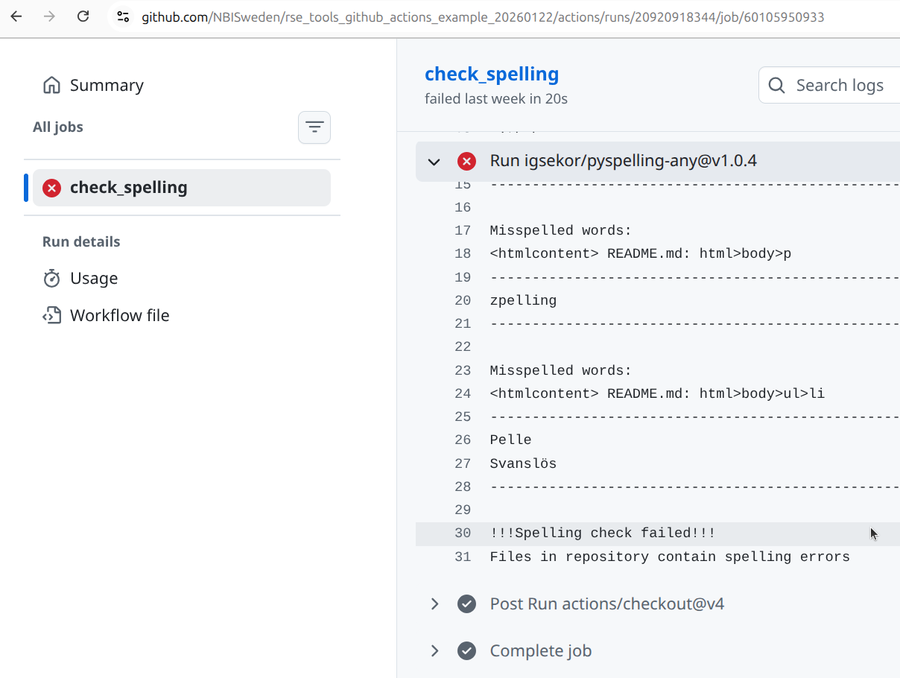
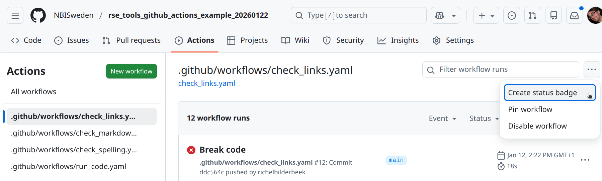

Watch the ‘RSE Tools session: GitHub Actions’ YouTube video.
1.1. How would you …?
You are the only maintainer of a FOSS (‘Free and Open Source Software’) GitHub repository.
You want the repo to:
- Have no stupid spelling errors
- Have no broken hyperlinks
- Show to the users the status of the repo (e.g. it has yes/no stupid spelling errors at the moment)
How would you do this?
1.2. How would you …?
You are one of the maintainers of a FOSS GitHub repository. Your team members have different styles/preferences on how to write Markdown (e.g. indent with 2 versus 4 spaces, write image captions yes/no).
You and your team want the repo to have a consistent coding standard.
How would you do this?
1.3. How would you …?
You work on a FOSS coding project that uses a test suite to guarantee quality. A user submits code using a GitHub fork and a pull request.
Before accepting the pull request, you want to make sure the submitted code indeed passes all tests.
How would you do this?
2. Goals
A free service for FOSS development to run any code upon a git push
To guarantee quality, to collaborate better, to interact with users better
See the exercises
Non-goals:
- Discuss best practices
- Show and explain a more complex script/setup
3. What is GitHub Actions?

- A Continuous Integration service from GitHub, that is free for FOSS development
- It allows you to run code triggered by a
gitaction, e.g. agit push
my_gha_script.yaml
on:
push:
jobs:
run_my_code:
runs-on: ubuntu-latest
steps:
- uses: actions/checkout@v4
- run: python hello.py4. Why is GitHub Actions important?
- It is free (as in beer) for FOSS development
- It helps assure quality
- It helps show that you care about quality
- It helps collaboration with a team
- It helps interaction with users
5. How you could …
- Find a GitHub Actions script from someone else
- Put it in your
.github/workflowsfolder - Commit
- Watch it in action at the ‘Actions’ tab
Alternatively, fork a repo.
5.1. A general GitHub Actions script
check_something.yaml
- 1
- Section the specify the triggers of this script
- 2
-
This script is triggered by a
git push - 3
- The jobs that will be done when the script is triggered
- 4
- The name of the job
- 5
- The image of a virtual machine that this job uses
- 6
- The steps of this job
5.2. Example 1: broken link checker
check_links.yaml
- 1
-
Step to clone the GitHub repository to the local virtual machine. The Action is version
4ofhttps://github.com/actions/checkout - 2
-
Step to check all the links in the Markdown files in freshly cloned repository. The Action is version
1ofhttps://github.com/gaurav-nelson/github-action-markdown-link-check
5.3. Example 2: spellchecker
check_links.yaml
- 1
-
Step to clone the GitHub repository to the local virtual machine. The Action is version
4ofhttps://github.com/actions/checkout - 2
-
Step to check the spelling in the files in the freshly cloned repository. The Action is version
1.0.4ofhttps://github.com/igsekor/pyspelling-any
5.4. Example 3: Markdown style checker
check_markdown_style.yaml
- 1
-
Step to clone the GitHub repository to the local virtual machine. The Action is version
4ofhttps://github.com/actions/checkout - 2
-
Step to check the Markdown style in the files in the freshly cloned repository. The Action is version
1ofhttps://github.com/articulate/actions-markdownlint
5.5. Example 4: Whatever you want!
run_code.yaml
- 1
- Step to clone the GitHub repository to the local virtual machine
- 2
- Check the Python version installed on the virtual machine
- 3
- Run the Python script
6. How to view an error log

Click on ‘Actions’. Screenshot from the example repo of this session

Overview of the GitHub Actions. In red: the scripts. In blue: the logs of the scripts Screenshot from the example repo of this session

check_spellingScreenshot from the example repo of this session

check_spellingScreenshot from the example repo of this session

Screenshot from the example repo of this session
7. FAQ
@vs in the GHA scripts?
These are version numbers.
You use the version that works, until it breaks. Then you update it.
Two hours.
Yes.
In technical terms, this means that your GHA script has multiple jobs.
Yes.
In technical terms, this means that your GHA script has multiple jobs, that will run in parallel.
Because I enjoy any piece of code doing one single thing well and, due to that, can have a descriptive name.
You preferences may differ, which is fine :-)
Yes, it can be made to run on virtual Windows machines.
No, it does not run on Windows hardware: for that, use AppVeyor instead. An example is this AppVeyor script to generate the Windows executable of a computer game.
Yes, it can be made to run on virtual MacOS machines.
No, it does not run on MacOS hardware: for that, use CircleCI instead.
Yes.
You will need to provide a ‘runner’, i.e. a service that will run your scripts upon a git push. As far as I know, these are not free.
Yes.
An example is the SCoRe user documentation script update_content.yaml where a website is updated daily
Yes.
An example is the SCoRe user documentation script check_markdown.yaml which is triggered when a Markdown file is changed, or when a configuration file about this is changed.
sudo rights?
Yes.
This allows you to install anything you like.
Yes.
In this GitHub Actions script an HTML website is created from Markdown, where the plain HTML is pushed to the gh-pages branch.
This may be a bit more tricky. In this case:
- The GHA bot needs permissions to push
- GitHub Pages need to be active
Both can be set in the Settings of the repo.
I assume yes: if one GHA script creates a commit, that triggers another script that creates a commit, which triggers another script that creates a commit, etc., then I assume yes.
However, I have never tested this. Let me know what you find :-)
Yes.
In this GitHub Actions script some PDFs are created, which are then uploaded.
These can then be downloaded as artifacts.
Yes.
- SCoRe user documentation’ MkDocs website uses this GitHub Actions script
- RSE Tools Quarto websit uses this GitHub Actions script
Deploying a website can be a bit more tricky:
- The GHA bot may need permissions to push
- GitHub Pages may need to be active and setup correctly
Thes settings can be set in the ‘Settings’ tab of the repo.
Yes.


This will provide you with the Markdown code you can copy-paste to, for example, README.md.
An example is the SCoRe user documentation:

8. Findings in the literature
A continuous integration service (such as GitHub Actions):
- Bugs are exposed around 20 times faster
[Vasilescu et al., 2015]
From [Vasilescu et al., 2015] table 6:
- 0.4 bugs per month are found by by core developers
- 0.164 bugs per month are found by by external collaborators
- Hence 0.564 bugs per month are found
- Per month, projects report 0.026 bug less
This means that 0.564 found by CI per 0.026 ‘solved’ by time, 0.564 / 0.026 = 21.692307692
- New features are added around 4 times faster
[Vasilescu et al., 2015]
From [Vasilescu et al., 2015] table 4:
- 0.049 (intercept) PRs per month are merged by core developers when there is no CI
- 0.049 (intercept) + 0.187 (slope) = 0.236 per month are merged by core developers when there is CI
This means that (N-O)/O = (0.236 - 0.049) / 0.049 = 3.8 times more PRs merged when CI is on.
You can use GitHub Actions to run your test suite(s).
- Coding errors are extremely common
[Baggerly and Coombes, 2009]
In all of the papers used to illustrate errors in published bioinformatics analyses. Each of these papers had simple errors, such as using the incorrect number of samples (this matters when taking an average :-) ).
- Simple testing can prevent most critical failures
[Yuan et al., 2014]
A 100 percent (!) of the catastrophic failures (i.e. the most problematic type of failures) would be exposed by using code coverage testing to find the error handling logic, after which that logic is tested by a simple unit test.
A simple example they show is a developer leaving a TODO in the error handling code.
You can use GitHub Actions to measure code coverage, which is the percentage of code tested.
- Code coverage correlates, sometimes very strongly, with code quality
[Horgan et al., 1994][Del Frate et al., 1995]
Going from 62% to 92% code coverage means that 227% more faults are detected.
From [Horgan et al., 1994] Table 2:
- 1 test, 62% block coverage, 30.2% faults detected
- 21000 test, 91.8% block coverage, 98.9% faults detected
The change: `(N - O) / O = (98.9 - 30.2) / 30.2 = 2.274834437 = 227%
From [Del Frate et al., 1995] Figure 2 we can see the ranges in correlation coefficients in different programs:
- Ranges: [0.16 - 0.91], [-0.10 - 0.72], [0.93 - 0.99], [0.89 - 0.91], and [0.98 - 0.99]
- Middle of these ranges: 0.535, 0.31, 0.96, 0.90, 0.985
- Average of these: (0.535 + 0.31 + 0.96 + 0.90 + 0.985) / 5 = 74%
- Some communities make 100% code coverage mandatory to pass a code peer-review (e.g. rOpenSci
[Hart et al., 2013])
You can use GitHub Actions to check for coding style, such as Python’s PEP8 [PEP 8] and R’s Tidyverse [Wickham, 2019] style.
9. Exercises
9.1. Exercise 1: work with GitHub Actions
Yes.
There is no hidden state in the forked GitHub repo:
Copy-pasting the scripts to a repo made from scratch works exactly the same.
- Read the section ‘How to view an error log’
- Find the error messages and fix all the errors
Indeed, there are some words pointed out as spelling errors, when they are not. In this repo, Pelle Svanslös is a valid name of a fictional character.
Some repositories, such as the SCoRe user documentation document which files belong to which CI scripts.
From that, one can deduce that .wordlist.txt needs to have the following two lines added:
.wordlist.txt
Pelle
Svanslös9.2. Exercise 2: find GitHub Actions
- Surf to the GitHub Actions Marketplace
- Find something you would like a GitHub Action to do
- If you found something, try to make it work by copy-pasting an example script from the documentation of your favorite Action.
9.3. Exercise 3: literature
- Read the section ‘Findings in the literature’. Do you think using GitHub Actions is worth it?
You are always welcome to discuss the finding in the academic literature on this with me!
References
[Baggerly and Coombes, 2009]Baggerly, Keith A., and Kevin R. Coombes. “Deriving chemosensitivity from cell lines: forensic bioinformatics and reproducible research in high-throughput biology.” The Annals of Applied Statistics (2009): 1309-1334.[Del Frate et al., 1995]Del Frate, Fabio, et al. “On the correlation between code coverage and software reliability.” Proceedings of Sixth International Symposium on Software Reliability Engineering. ISSRE’95. IEEE, 1995.[Hart et al., 2013]Hart, Edmumd, et al. “rOpenSci-a collaborative effort to develop R-based tools for facilitating Open Science.” figshare (2013): 791569.[Horgan et al., 1994]Horgan, Joseph R., Saul London, and Michael R. Lyu. “Achieving software quality with testing coverage measures.” Computer 27.9 (1994): 60-69.[PEP 8]Van Rossum, Guido, Barry Warsaw, and Nick Coghlan. “PEP 8–style guide for python code.” Python. org 1565 (2001): 28.[Vasilescu et al., 2015]Vasilescu, Bogdan, et al. “Quality and productivity outcomes relating to continuous integration in GitHub.” Proceedings of the 2015 10th joint meeting on foundations of software engineering. 2015.[Wickham, 2019]Wickham, Hadley. Advanced R. chapman and hall/CRC, 2019.[Yuan et al., 2014]Yuan, Ding, et al. “Simple testing can prevent most critical failures: An analysis of production failures in distributed data-intensive systems.” 11th USENIX Symposium on Operating Systems Design and Implementation (OSDI 14). 2014.